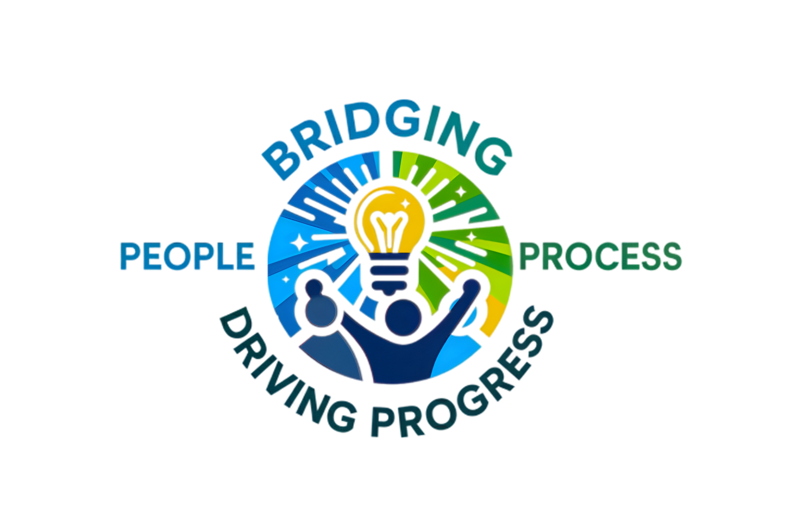
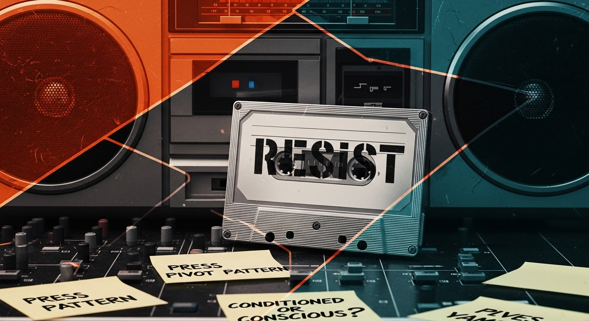
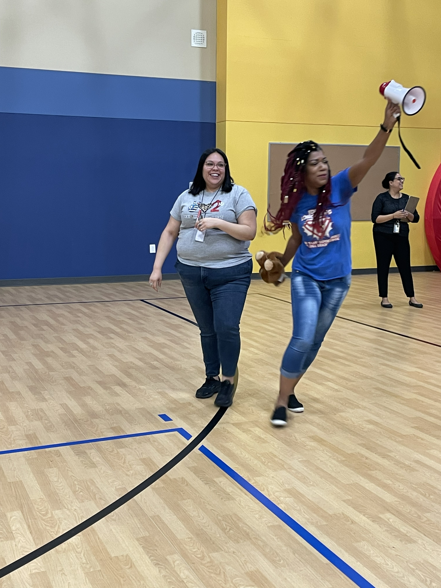
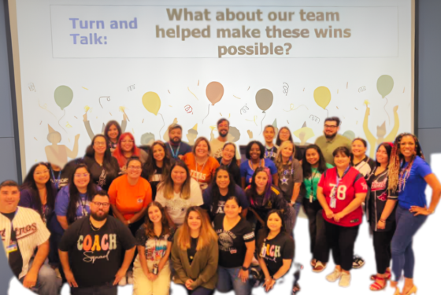
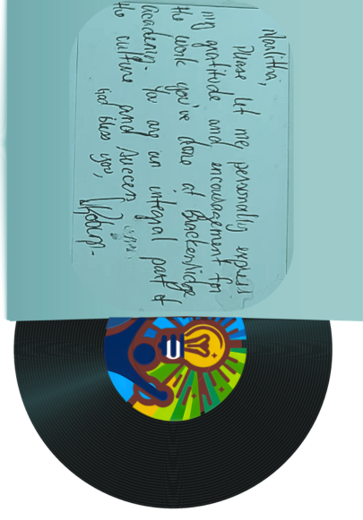
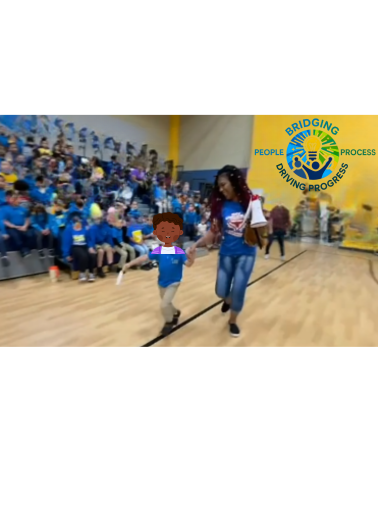
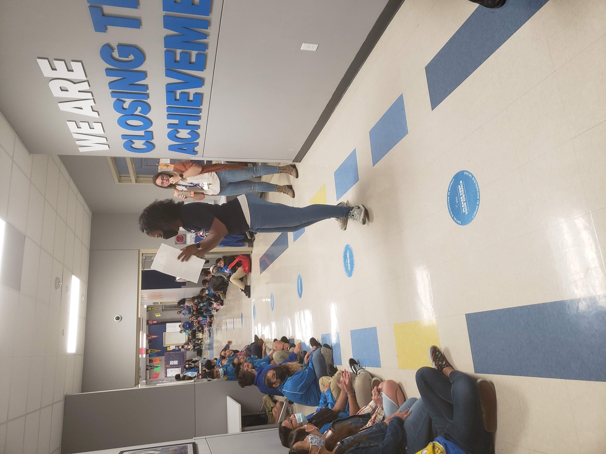
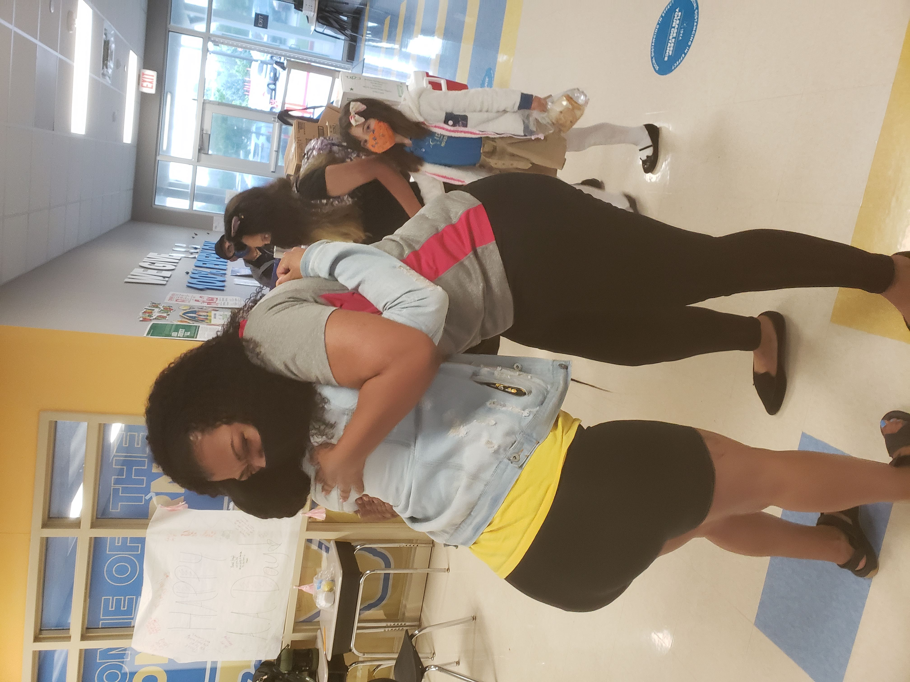

The R3.A.P. Method
R³ Agency Practice
Stop Reacting. Start Remixing.

"FREESTYLE" ON
purpose.
NOT PERFECTLY —
purposefully.


How you gonna see 'em if you livin' in the fog?"
The snake, the rat, the cat, and the dog represent the objective reality of a situation—the actual behaviors, conflicts, and challenges standing in front of you. You cannot distinguish truth from perception when your vision is skewed by the fog.
The "fog" is your conditioned response. It’s the exhaustion, the burnout, and the automatic reactions that take over when the pressure builds. You cannot sustain a healthy relationship if you are blinded by your own triggered state. R³.A.P. is the operating system you use to clear the room.
In The Classroom
For educators carrying the heavy emotional weight of a campus, trying to lead without losing their own pulse.
In Caregiving
For families and advocates pouring from an empty cup, trying to sustain compassion without burning out.
In The Workplace
For professionals navigating high-stakes dynamics, shifting from reactive stress to purposeful leadership.
In Relationships
For anyone trying to break generational cycles of disconnection and build communication rooted in safety.

Where are you on the board right now?
When the pressure builds, the noise takes over. R³ is the confident interjection that stops the spiral and takes it back to the root. Take 60 seconds to check your levels.
Which of these feels most like your truth right now?
When something difficult happens, what does your body do?
After the moment passes, what do you usually feel?
The R³ Model begins exactly where you are.
Reflection is the practice of seeing clearly what's happening beneath the automatic response. Like a producer isolating an audio track, it’s about separating the raw truth from the emotional noise — while it's happening. This is where your work begins.
You've done the listening. Now comes the pause.
Resistance is where automaticity—the conditioned reflex that skips like a scratched record—gets interrupted. By hitting pause on the track, conscious choice becomes possible. The R³ Model gives you a structure for exactly this space.
You've found the sample. Now make it your default.
Purposeful Practice — applying insight consistently — is how neuroplasticity works. You have to play the new beat repeatedly until the nervous system updates its default rhythm. That's what Phase 3 builds toward.
A detailed breakdown of the R³ Architecture.
Choose Your Frequency
Everyone processes differently. How do you want to learn the method?
 "It ain't where you from, it's where you're at." — RakimReflection is not about reliving or judging the moment. It is about looking at it clearly enough to understand what it is showing you. You can't remix a song if you don't listen to the original sample first.
"It ain't where you from, it's where you're at." — RakimReflection is not about reliving or judging the moment. It is about looking at it clearly enough to understand what it is showing you. You can't remix a song if you don't listen to the original sample first.Aware — What emotional load did you bring in?
Attentive — What is your body doing right now? The body registers the threat before the mind names it.

"Sleep is the cousin of death." — NasThe intentional interruption of the conditioned response (inhibitory control)—like catching the needle before it drops. Resistance is hitting pause long enough to wake up and choose your direction.Pattern Recognition — Default track or making a choice?
Alignment Check — Does this align with my values?
Consequence Awareness — What is the cost of this action?
 "You can paint a pretty picnic, but you can't predict the weather." — André 3000Revelation is the AH-HA moment: the point at which objective awareness and conscious choice combine to generate truth about yourself.
"You can paint a pretty picnic, but you can't predict the weather." — André 3000Revelation is the AH-HA moment: the point at which objective awareness and conscious choice combine to generate truth about yourself.Receive the insight — Name the pattern recognized.
Integrate without judgment — Holding the truth without shame or deflection.
Ways to work with AH-HA Coaching.

The Solo Track
1-on-1 & Culture Coaching
Deep, individualized work to identify specific conditioned tracks and build a custom R³ playbook. For leaders and educators ready to fundamentally change their baseline from reaction to intentionality.

The Group Cypher
Workshops, PD & Keynotes
Interactive training and high-energy live events for schools, caregiving teams, and organizations. We equip your people with the tools to interrupt their own conditioned responses, shifting culture from the inside out.
Singular focus. Immediate. The Default Track.
Driven by impulse rather than awareness.
A life where you are enough — and still becoming.
Meet Marlitha Williams
The greatest lyricists in hip-hop aren't just delivering highly skilled performances—they use rhythm and language to process reality, organize their thinking, and tell the truth about their environment. That same ability to look at a heavy situation, find clarity, and shift the narrative is the foundation of the R³ Framework.
As the founder of AH-HA Coaching, LLC, I specialize in helping educators, caregivers, and professionals shift from chronic exhaustion to intentionality. My approach is rooted in over 15 years of deep, systemic experience at the intersection of education and trauma-informed practice.
Before developing the R³ Model and the Lee and Tee Learning Series, my foundation was built through years of work in addictions counseling, domestic violence advocacy, and restorative practices. This background profoundly shaped my tenure as a school principal. I understand that burnout and behavioral challenges aren't solved by quick tips—they require true psychological safety and emotional regulation.
By implementing these exact coaching frameworks on a campus facing relentless demands, we transformed the culture. We achieved an 87% teacher growth rate, significantly improved staff retention, and created an environment where adults and students could actually thrive.
I built this practice because I believe joy and balance shouldn't be luxuries. Together, we can locate your conditioned patterns, hit pause, and write a healthier track.
Marlitha Williams






What People Are Saying
Ready to Change Your Track?
Whether you are a caregiver seeking support, an educator navigating classroom stress, or an organization looking to shift its culture, the R³ framework offers a path forward.
Reach out today to discuss coaching, workshops, or speaking engagements.